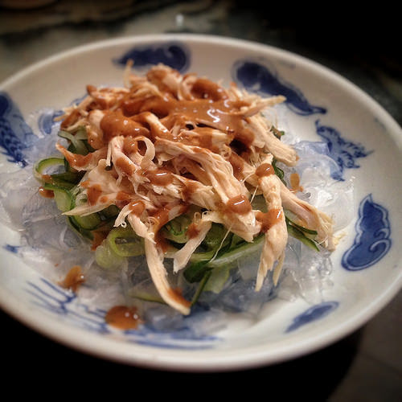

#8 - CHICKEN AND MUNG BEAN SHEET SALAD - 雞絲粉皮
You can find this dish in all Shanghainese restaurant menu because everyone likes it. Though the name of this dish is Chicken and Mung Bean Sheet Salad, it is totally fine to skip the chicken. That will make it vegetarian and vegan dish.

INGREDIENTS:
- 100 g cooked chicken meat
- 1 cucumber
- 200 g fresh mung bean sheet
- 1 green onion
- 1 tsp roasted sesame seed
- 375g Ho Fen河粉 (fresh thick rice noodle)
SAUCE:
- 2 TBSP sugar
- ½ tsp salt
- 1 clove garlic, finely minced
- 1 TBSP Zhenjiang vinegar鎮江醋
- 1 TBSP light soy sauce
- 1 tsp sesame oil
- 2 TBSP water / chicken broth
- 1 TBSP oil
- 4 TBSP sesame paste
Directions:
- Wash and cut the cucumber into fine julienne. Set aside.
- Cut the mung bean sheet into ¼ to ½-inch strips.
- Soak mung bean noodle in hot water. Separate the noodle into single layer. Cook the noodle in hot water a bit until soft, if it is still too chewy after soaking.
- Drain. Add 1 TBSP cooked oil and ½ t salt. Mix well to coat.
- Cut or shred the chicken. Cut the green onion into small pieces.
- Put the mung bean sheet at the bottom of the serving plate.
- Arrange the chicken and the cucumber on the top.
- Garnish with green onion and toasted sesame.
- Put all ingredients of the sauce into a small bowl, mix well until smooth.
- Just before serving, pour the sauce, and toss.
(Serves 1 person)
Note:
- You may substitute sesame paste with peanut butter; Zhejiang vinegar with balsamic vinegar or any dark vinegar
- If you can find fresh mung bean sheet, you may use the dry version. Cook it in boiling water just like noodle, and then rinse it in cold water.